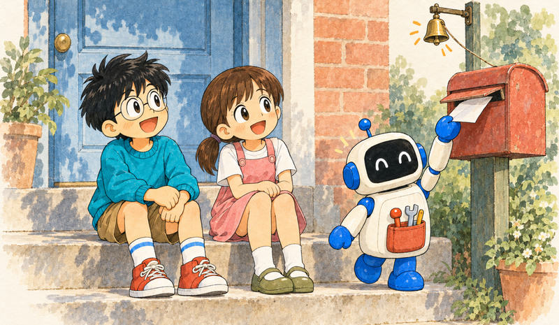
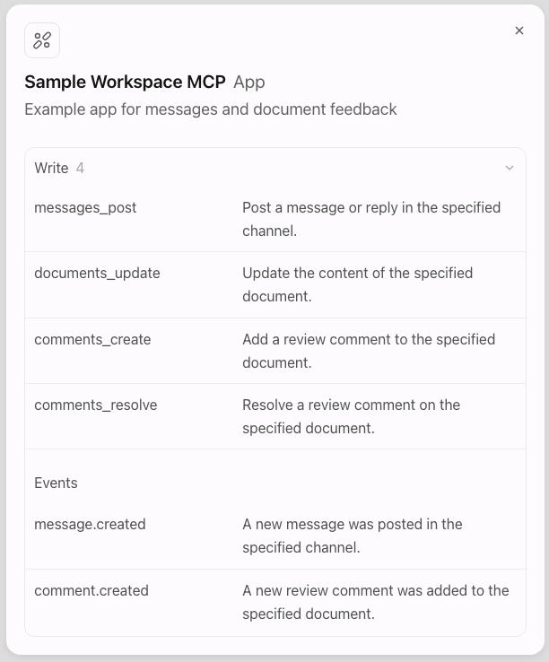

Feature 05 · VERBATIM
MCP Events
MCP Events lets ChatGPT subscribe to updates from your MCP server, such as new messages, content updates, or status changes. Users choose what to monitor and what ChatGPT should do when an update arrives.

| Use case | User request | MCP event |
|---|---|---|
| Turn feedback into pull requests | Monitor #product-feedback for bug reports and open draft pull requests with fixes and tests. | message.created, filtered by channel_id |
| Apply document feedback | Watch this document for review comments and implement any requested edits. | comment.created, filtered by document_id |
Before you start
MCP Events is available in Work chats on ChatGPT web, in Work chats in the desktop app with Cloud selected, and with dots. Workspace controls for plugins and event-triggered tasks apply.
MCP Events in ChatGPT requires MCP 2.0 (protocol version 2026-07-28). Configure your server in your plugin and provide persistent subscription storage and outbound HTTPS access to callback URLs.
ChatGPT supports webhook delivery and callback verification from the draft MCP Events specification. Polling, streaming, and the draft’s gap and terminated control notifications are not supported by this integration.
How it works
Your server lists the events it supports.
The user tells ChatGPT what to monitor and how to respond.
ChatGPT subscribes through your MCP server and supplies a callback URL and signing secret.
Your server sends matching events to that URL.
ChatGPT receives the event in the subscribed chat and follows the user’s instructions for how to respond.
Advertise event support
Event discovery starts with your server’s capabilities. Add events to the capabilities returned by its server/discover response:
{
"jsonrpc": "2.0",
"id": 1,
"result": {
"resultType": "complete",
"supportedVersions": ["2026-07-28"],
"capabilities": {
"tools": {},
"events": {}
}
}
}
Implement these three event methods on the same authenticated MCP endpoint as your tools:
| Method | Server behavior |
|---|---|
events/list | Describe available events and their filters. |
events/subscribe | Create or refresh a subscription. |
events/unsubscribe | Stop a subscription. |
Define an event
An event definition tells ChatGPT what users can subscribe to and which filters are available. Return these definitions from events/list, including the event name, supported delivery modes, subscription arguments, and payload schema.
{
"jsonrpc": "2.0",
"id": 1,
"result": {
"events": [
{
"name": "comment.created",
"description": "A new review comment was added to the specified document.",
"delivery": ["webhook"],
"inputSchema": {
"type": "object",
"properties": {
"document_id": {
"type": "string",
"description": "ID of the document to monitor for new review comments."
}
},
"required": ["document_id"],
"additionalProperties": false
},
"payloadSchema": {
"type": "object",
"properties": {
"document_id": { "type": "string" },
"comment_id": { "type": "string" },
"text": { "type": "string" },
"url": { "type": "string" }
},
"required": ["document_id", "comment_id", "text", "url"],
"additionalProperties": false
}
}
]
}
}
inputSchema describes the arguments passed when ChatGPT subscribes, while payloadSchema describes the data object in each delivered event.
Use stable event names and specific descriptions. Expose filters such as document, project, or queue IDs, and apply them on your server before delivery. Return only events the connected account is allowed to discover.
If the catalog spans multiple pages, return nextCursor and accept it as cursor on the next events/list request.
Create a subscription
When a user asks to monitor an event, ChatGPT calls events/subscribe with the event name, filter arguments, and webhook destination:
{
"jsonrpc": "2.0",
"id": 2,
"method": "events/subscribe",
"params": {
"name": "comment.created",
"arguments": {
"document_id": "doc_123"
},
"delivery": {
"mode": "webhook",
"url": "https://receiver.example.com/mcp-events/callback_123",
"secret": "whsec_<base64-encoded-signing-key>"
},
"cursor": null
}
}
Before accepting the subscription:
Check that the user is authorized for the requested event and arguments.
Validate the event name and arguments against your event definition. Require a
whsec_signing secret whose base64 value decodes to 24–64 bytes.Store the subscription, its owner, filters, callback URL, signing secret, and expiration.
Derive a deterministic subscription ID from the authenticated principal, callback URL, event name, and arguments. Return it with the granted expiration:
{
"jsonrpc": "2.0",
"id": 2,
"result": {
"id": "sub_123",
"refreshBefore": "2026-10-02T12:00:00Z",
"cursor": null,
"truncated": false
}
}
Set refreshBefore to the expiration your server grants. Return cursor: null for event types that do not support replay.
Make subscription creation idempotent: update the existing subscription when its identity matches. Compare arguments using canonical JSON so object key order does not create duplicate subscriptions.
Verify the callback
Before sending application data, verify the callback by sending a signed request with a fresh, single-use, short-lived challenge:
{
"type": "verification",
"challenge": "a-single-use-random-value"
}
Assign the verification request a unique webhook-id, such as msg_verification_123, and sign its body with the subscription’s secret. Include webhook-timestamp, webhook-signature, and X-MCP-Subscription-Id. ChatGPT echoes the challenge in a successful response:
{
"challenge": "a-single-use-random-value"
}
Require a 2xx response and compare the returned challenge in constant time before activating delivery. Cache successful verification by authenticated principal and callback URL for a bounded period so repeated subscription requests do not trigger repeated challenges. If verification fails, return JSON-RPC error -32015 (CallbackEndpointError) with a categorized data.reason, such as challenge_failed or timeout.
Require HTTPS for callbacks. Resolve and validate destination addresses at connection time, then connect to the validated address while preserving the original hostname for TLS verification. Block private, local, and other non-public addresses, and do not follow redirects. Apply these checks to verification requests as well as event deliveries.
Send an event
When a new comment matches an active subscription, POST one event object to that subscription’s callback URL:
{
"eventId": "evt_456",
"name": "comment.created",
"timestamp": "2026-10-01T12:05:00Z",
"data": {
"document_id": "doc_123",
"comment_id": "comment_456",
"text": "Can we add the rollout dates to this section?",
"url": "https://docs.example.com/doc_123#comment_456"
},
"cursor": null
}
Use a unique event ID and preserve it across retries. Set timestamp to the event’s occurrence time as an ISO 8601 timestamp with a timezone. The name must match the subscribed event, and the data object must match its payloadSchema. Keep application fields inside data; a top-level type identifies a protocol control notification.
For large records, send a summary and expose a read tool to retrieve the full record. Treat comments and other user-authored text as data; do not add instructions telling the model how to behave inside the event payload.
Sign the request
ChatGPT verifies deliveries using Standard Webhooks. Send these headers:
| Header | Value |
|---|---|
Content-Type | application/json |
webhook-id | The same value as the body’s eventId. |
webhook-timestamp | The signing time as Unix seconds. |
webhook-signature | The Standard Webhooks HMAC signature. |
X-MCP-Subscription-Id | The ID returned by events/subscribe. |
Sign deliveries using Standard Webhooks and the subscription’s signing secret. Because the signature covers the event ID, signing timestamp, and exact request body bytes, serialize the body once and send those same bytes.
Send a signed event with Node.js
Install the Standard Webhooks library:
npm install standardwebhooks
Pass a webhookFetch function with the same interface as fetch that validates callback addresses on each connection and blocks redirects.
import { Webhook } from "standardwebhooks";
export async function sendEvent(subscription, event, webhookFetch) {
const body = JSON.stringify(event);
if (Buffer.byteLength(body, "utf8") > 256 * 1024) {
throw new Error("Event payload exceeds 256 KiB");
}
const signedAt = new Date();
const signer = new Webhook(subscription.secret);
const response = await webhookFetch(subscription.url, {
method: "POST",
redirect: "error",
signal: AbortSignal.timeout(10_000),
headers: {
"Content-Type": "application/json",
"webhook-id": event.eventId,
"webhook-timestamp": String(Math.floor(signedAt.getTime() / 1000)),
"webhook-signature": signer.sign(event.eventId, signedAt, body),
"X-MCP-Subscription-Id": subscription.id,
},
body,
});
return { accepted: response.ok, status: response.status };
}
Set subscription.url and subscription.secret from the subscription request’s delivery object.
Handle delivery responses
A 2xx response acknowledges webhook receipt. ChatGPT processes the event asynchronously.
Send one event per request, with a complete request body no larger than 256 KiB (262,144 bytes). ChatGPT can group separately delivered events into one task run according to the task’s batching settings.
Retry transient failures with exponential backoff and bounded attempts. Preserve the event ID and generate a fresh signing timestamp and signature for each attempt. Do not retry deliveries that return 410 or 413.
Events can arrive out of order. Make write tools idempotent so repeated calls do not duplicate changes.
Manage subscriptions
Retain subscription state for the lifetime you grant, including across server restarts. Recheck the user’s access during the subscription’s lifetime and stop delivery if access is revoked.
Refresh a subscription
ChatGPT refreshes expiring subscriptions by calling events/subscribe before refreshBefore, using the same subscription identity and the last saved cursor. Update the existing subscription and return its new expiration in refreshBefore.
When ttlMs is omitted, use your server’s default subscription lifetime. When provided, it specifies the requested lifetime in milliseconds. Grant no more than that duration, except when enforcing a minimum lifetime to prevent excessive refresh requests.
ttlMs: null requests a subscription without expiration. Return refreshBefore: null only when granting that request. Otherwise, return a finite expiration and stop delivery when it passes.
When a refresh supplies a replacement signing secret, replace the stored secret. During a short rotation window, sign with both the old and new keys using Standard Webhooks’ space-separated signatures.
For replayable events, use the request’s cursor to resume after an expired subscription or server restart. In subscription responses and event payloads, return a cursor that does not skip events still awaiting delivery. Return truncated: true when the requested history is no longer available. For event types without replay, return cursor: null; events missed during an interruption cannot be recovered through the protocol.
Stop a subscription
Handle events/unsubscribe using the original event name, arguments, and callback URL:
{
"jsonrpc": "2.0",
"id": 3,
"method": "events/unsubscribe",
"params": {
"name": "comment.created",
"arguments": {
"document_id": "doc_123"
},
"delivery": {
"mode": "webhook",
"url": "https://receiver.example.com/mcp-events/callback_123"
}
}
}
Stop sending events for the matching subscription and return an empty result:
{
"jsonrpc": "2.0",
"id": 3,
"result": {}
}
Make unsubscribe idempotent and authorize it against the connected account.
Test in ChatGPT

With the event methods and webhook delivery in place, connect your MCP server to ChatGPT through a plugin and test the full subscription lifecycle:
Confirm your server receives
server/discoverandevents/list, and returns the expected event definitions.Verify that your events appear on your plugin page alongside your tools. Rescan your MCP server whenever you change its tools or events.
Plugin events. Discovered events appear alongside tools on the plugin page.
Start a Work chat on ChatGPT web, or select Work and Cloud in the desktop app. Ask ChatGPT to subscribe to one of your events and specify what it should do when an event arrives. You can also test with a dot.
Confirm your server receives
events/subscribewith the expected event name and arguments.Check that callback verification succeeds and the subscription is stored.
Trigger a matching event in your app and confirm that the webhook delivery receives a
2xxresponse.Verify that ChatGPT receives the expected event data and responds as instructed.
For filtered subscriptions, trigger an event that does not match the filters and confirm it is not delivered to the subscription.
Stop monitoring in ChatGPT. Confirm that your server processes
events/unsubscribeand stops delivery.
Also test repeated subscription requests, expiration and refresh across a server restart, account disconnection, revoked access to a subscribed resource, invalid signatures, duplicate deliveries, and bursts with batching enabled and disabled. If the requested action changes data in the source app, verify that the resulting events do not create a feedback loop.
Protocol reference: MCP Events design sketch.